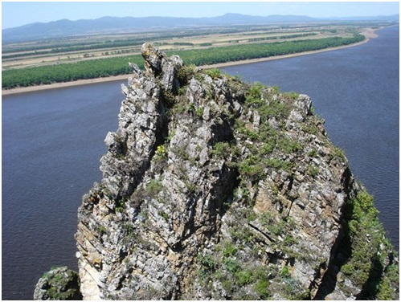

18. Медвежий утёс
Памятник природы областного значения "Медвежий утёс" площадью 140 га расположен в 3 км к северу от села Екатерино-Никольское Октябрьского муниципального района. Он образован в целях сохранения ландшафтного комплекса скального образования с уникальными компонентами геологического происхождения, редкими объектами животного и растительного мира, занесёнными в Красные книги РФ и ЕАО.
Памятник природы представляет собой скальное живописное образование, протянувшееся вдоль левого берега реки Амур на расстояние 2 км. Скальное обнажение сложено известняками и доломитами. Преобладающая вершина — гора Утёс (208,6 м). Западные склоны обнажения, обращенные к реке Амур, очень крутые, почти вертикально обрываются к речной глади. Абсолютная максимальная высота утёса отмечена в центральной его части и составляет 45-50 м, постепенно понижаясь в сторону окраин. Растительный покров неоднороден. Участки, покрытые древесной растительностью, перемежаются участками с травяно-кустарниковой растительностью или вовсе лишёнными растительного покрова.
В составе ландшафтного комплекса отмечена высокая степень концентрации растений. Здесь произрастает более 20 видов растений, занесённых в Красные книги РФ и ЕАО. В числе деревьев и кустарников: груша уссурийская; боярышник перистонадрезный, пузыреплодник амурский, свободноягодник (акантопанакс) сидячецветковый, жимолость Маака, секуринега полукустарниковая. Из цветковых травянистых растений, отнесенных к категории редких и нуждающихся в охране, в границах памятника природы встречаются венерин башмачок крупноцветковый, водосбор зеленоцветковый, гусиный лук малоцветковый, диоскорея ниппонская, живокость крупноцветковая, лилия низкая, ломонос широкорассечённый, норичник амгунский, нителистник сибирский, пион молочноцветковый, рапонтикум одноцветковый, трёхбородник китайский, ширококолокольчик крупноцветковый, юнгия тонколистная.
На скальном обнажении произрастают редкие виды папоротников: пиррозия длинночерешковая, алевритоптерис серебристый, многорядник укореняющийся, костенец стенной, кривокучник сибирский. Отмечен также плаунок тамарисковый.
Наряду с представителями редких видов флоры на территории памятника природы обнаружены гнёзда скалистого голубя и филина.
